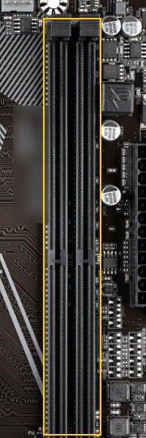
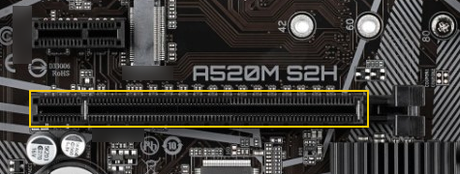

De test van dit labo vraagt naar dezelfde dingen als deze vragen, met andere getallen en andere voorbeelden. Beantwoord elke vraag eerst zelf en klap daarna pas het antwoord open. Bij elk antwoord staat op welke pagina het uitgelegd wordt, dus lees die opnieuw wanneer je ernaast zat. Er wordt niets bijgehouden en er staat geen punt op.
Socket AM4 ernaast gedrukt. De chipset regelt het verkeer tussen de
processor en de rest van het moederbord, en bepaalt mee hoeveel USB-poorten en SATA-poorten er
zijn. Zie De componenten van een
pc.

CPU_FAN sluit de
vraag zelf uit, want de ventilatoren draaien. Zie De componenten van een pc.CPU_FAN-aansluiting?
UEFI:; dat zijn twee manieren om van
dezelfde stick te starten en geen twee sticks. Zie BIOS en UEFI.